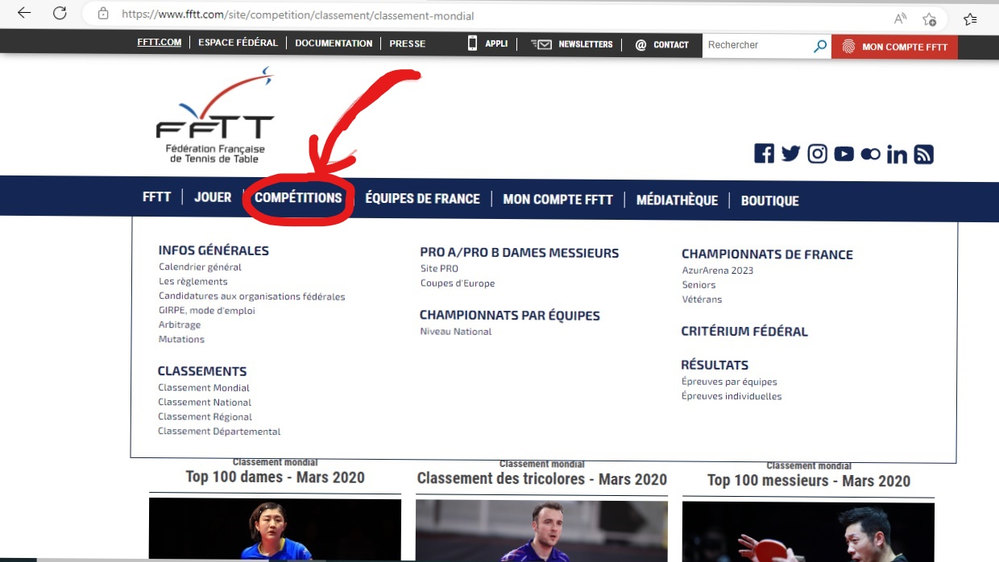
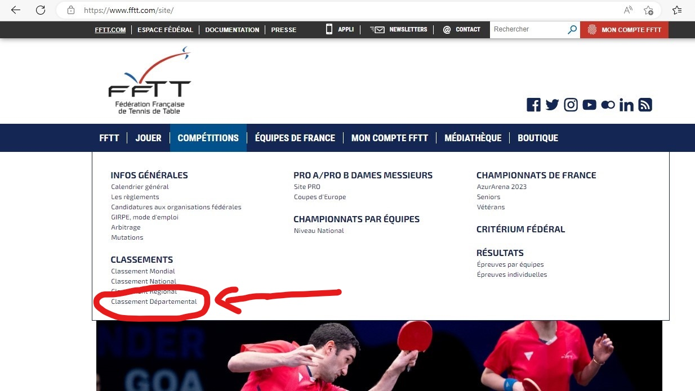

Voici un site web pour voir les actualités compétitives des joueurs du monde entier voire même de certains joueurs pouvant jouer dans votre département.
https://www.fftt.com/site .
Pour vous repérer dans (ce qui doit être pour vous) un labyrinthe, je vous donne les clés pour retrouver une personne que vous connaissez. Je vous mets aussi des images pour que vous puissiez comprendre les étapes une à une.
Voici plusieurs astuces :
--> Première astuce : Rechercher dans la barre le nom de famille ou prénom du joueur. Voir image ci-dessous.
- Au départ il faut tout d'abord aller sur le site puis placez le curseur sur la case COMPETITIONS.

- Après avoir fait cela, vous avez juste à cliquer sur l'onglet CLASSEMENT DEPARTEMENTAL.

--> Deuxième astuce : Si vous connaissez le nom du club dans lequel il joue, vous pouvez écrire celui-ci et trouver la liste de la totalité des joueurs (licenciés en compétition) inscrits sur cette page.